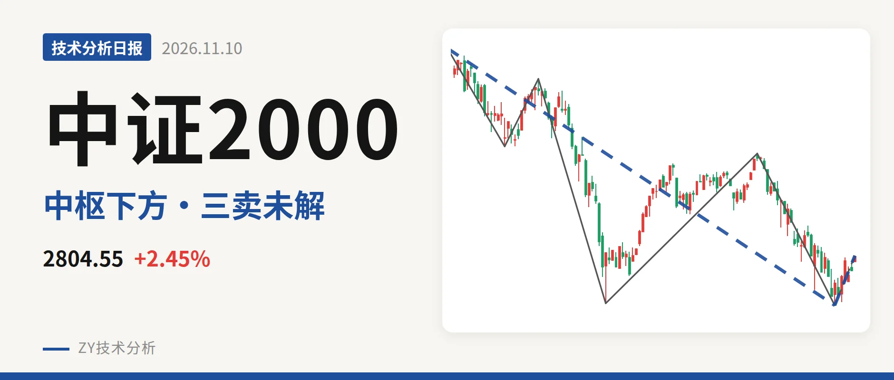
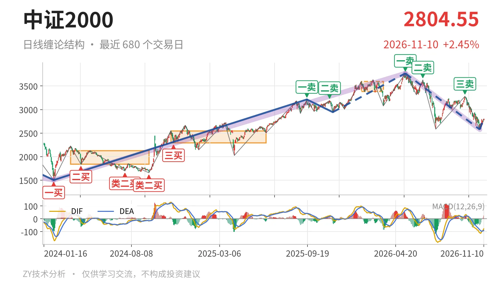

中证2000｜反抽3381未回，三卖压力未解

最近日线中枢 3381.36—3593.19点，收盘位于中枢之下
一句话：日线处5月14日以来下跌段，反弹未回3381点，暂按反抽处理
📉 走势结构：下跌线段延续，反弹仅成一笔
日线仍在5月14日以来的下跌线段中，该线段没有结束。更大级别看，2024年2月6日至2026年5月14日的上涨段由1503.44点涨至3768.08点，涨幅约150.6%；5月14日见顶后至11月2日低点2576.02点，跌约31.6%。当前11月2日以来的回升只有一笔，高点2806.86点，远达不到构成新日线线段的标准。因此这不是一段新的上涨，而是下跌线段内部的反抽。

📍 中枢与位置：价格在中枢下方，距下沿约17.1%
最近一个日线笔中枢落在1月26日至3月23日的3381.36—3593.19点，中轴3487.28点。最新收盘2804.55点，低于该中枢下沿约17.1%。此前2024年11月12日至2025年6月23日中枢在2293.12—2547.90点，之后中枢上移到3381—3593点区域，但价格未能站稳，重新跌回中枢下方。上方最近的结构压力就是3381点附近，最新DIF为-78.7，仍在零轴之下，反弹尚未改变MACD结构。
🔻 买卖点：三卖之后类二买暂定
日线笔级别上，5月14日一卖3768.08点、6月23日二卖3626.48点、9月22日三卖3280.29点，卖点一个比一个低。其中9月22日的三卖3280.29点距中枢下沿3381.36点约101点，反抽未触及中枢下沿。11月2日出现线段级别类二买2576.02点，但它所在的5月14日至11月2日下跌线段仍未走完，这个类二买只能按暂定处理。若后续再破2576点，这个买点只对应更小级别。

📊 背驰：新低但DIF低点抬高，背驰不完整
比较最近两次同向下跌笔：6月23日至7月21日下跌笔从3626.48点跌至2585.35点，绿柱面积810，DIF低点-164.2；9月22日至11月2日下跌笔从3280.29点跌至2576.02点，价格创了新低，但绿柱面积873略增，DIF低点-108.5明显抬高。这是价格新低而DIF低点不新低，但绿柱面积没有收缩，所以不是标准的下跌背驰，只能说明下跌力度有所减弱。反弹要改变结构，还需站上中枢下沿。
🧭 关键位置观察：3381与2576决定后续性质
若反抽不能回到3381点上方，日线结构仍属对最近中枢的三卖反抽，下跌线段没有结束。若重新站上3381点，当前下跌更可能转为围绕3381—3593点中枢的扩展，而不是继续单边下跌。下方2576点一线若再失守，11月2日的类二买失效，下跌线段继续延伸。当前结构更偏向下跌线段内部的反抽，反弹未站上3381点前，三卖结构仍在。
⚠️ 本文为基于公开行情数据的缠论技术结构记录，由程序自动计算并生成，仅供学习交流，不构成任何投资建议。市场有风险，投资需谨慎。